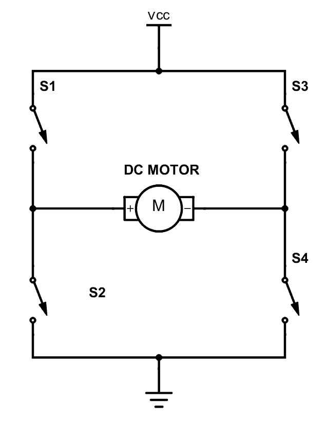
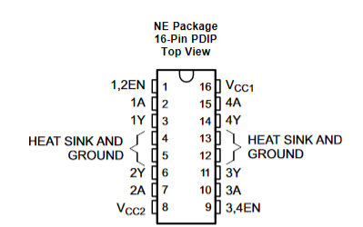
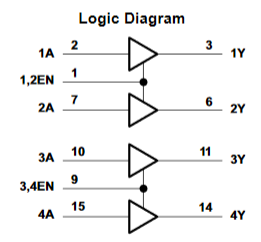

Objectives
- Understand the H-Bridge
- Control the motors with the H-Bridge
- Implement part 1 to control the motors using light
Familiarizing Yourself with the H-Bridge
 Diagram of H-Bridge. From https://www.build-electronic-circuits.com/h-bridge/The H-bridge in the diagram can be used to control the direction of rotation of the motor. For example, Closing S1 and S4 will rotate the motor clockwise. If S3 and S2 were closed the motor would rotate counter-clockwise. This characteristic of the H-Bridge allows us to control the movement of the robot.
 Pinout of L293D circuit. From L293D Spec Sheet  Logic diagram of L293D circuit. From L293D Spec SheetIn my implementation, we are using the L293D H-Bridge integrated circuit. The direction of the motors is controlled by pins 1A-4A and the speed is controlled by 1,2EN and 3,4EN by the Arduino.
The robot
 Circuit for the light following robot.
Controlling the motors for forward, backward, and spinning movement.
Circuit for the light following robot.
Controlling the motors for forward, backward, and spinning movement.
By sending different signals to the pins mentioned in the previous section, the motors can controlled for different directions as seen above. Below, the speed of the motors can also be configured!
Medium speed configuration for the robot. Slow speed configuration for the robot.Finally, the Light following robot will perform the following actions in a moderate to no light environment:
- Spin in a state of oblivion when no bright light source is pointed at it
- Turn towards a brighter light source than its current environment
- Move forwards to approach the light source without wriggling.